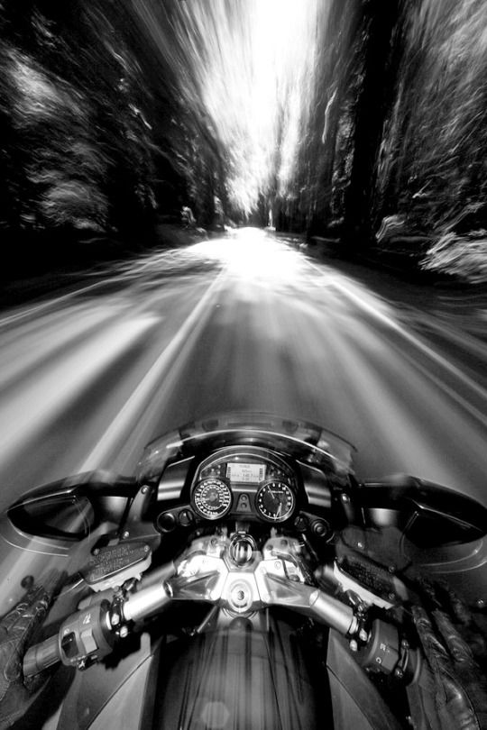
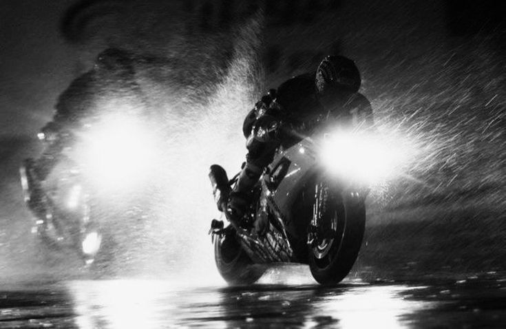
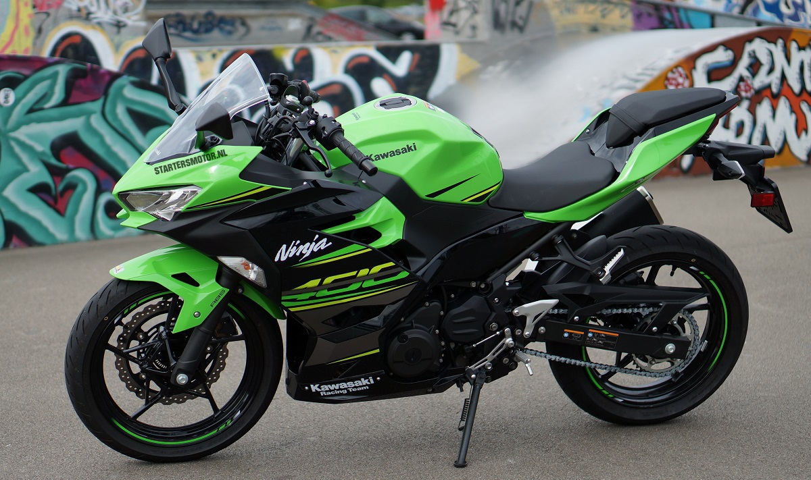

"You survived too many storms to be bothered by raindrops."

The Kawasaki Ninja 400 is a lightweight sport motorcycle that blends beginner-friendly handling with enough power to satisfy experienced riders. Introduced in 2018 as the successor to the Ninja 300, it quickly gained popularity for its balance of performance, comfort, and value.
It’s powered by a 399cc parallel-twin engine, delivering smooth power delivery and a surprisingly strong punch for its class. With around 47 horsepower, it’s A2-license compliant in Europe, making it an accessible option for newer riders, while still offering enough excitement for daily commutes and weekend rides.
The bike features a sporty yet comfortable riding position, making it less aggressive than full-on supersport models, but still sharp in looks and handling. Lightweight chassis design and approachable ergonomics make it easy to maneuver in city traffic, while its suspension and brakes provide confidence on twisty roads.
Overall, the Ninja 400 is often praised as one of the best entry-level sportbikes, combining reliability, style, and performance without overwhelming the rider.

